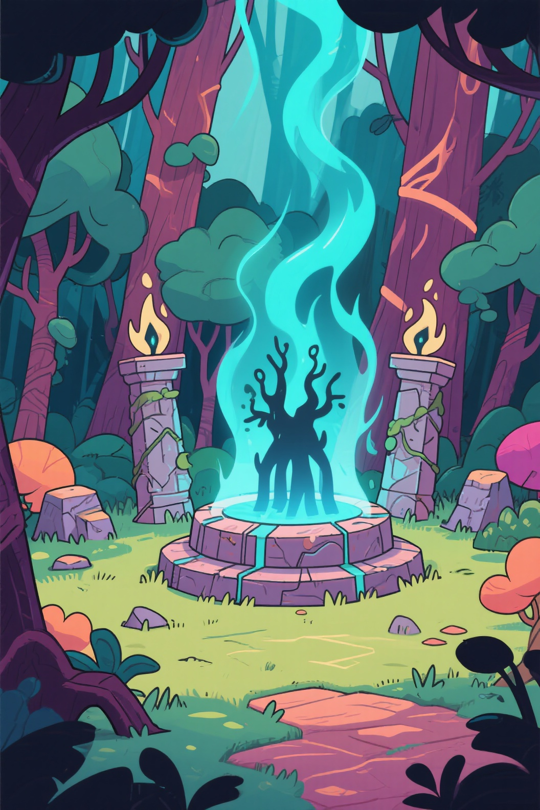
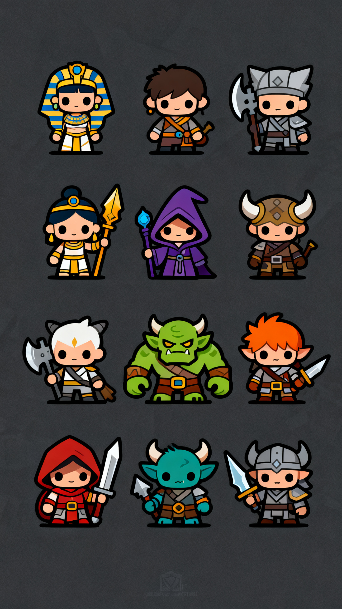
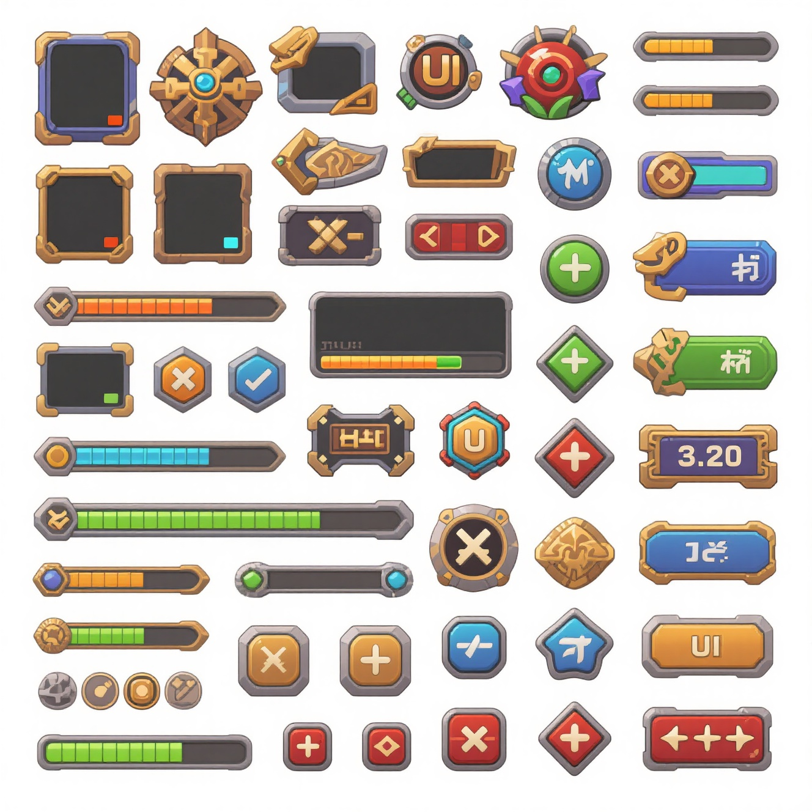
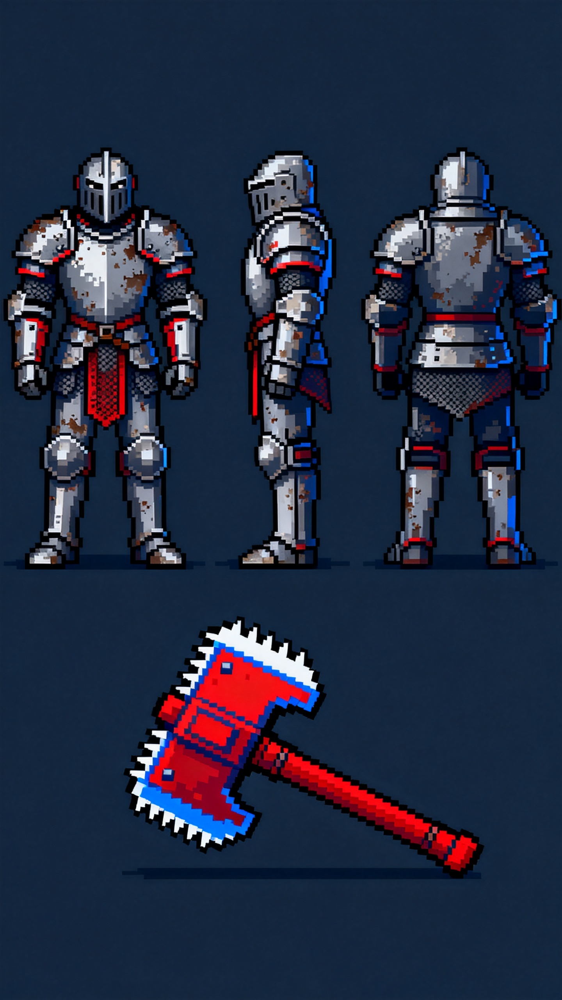

角色工作台
角色立绘、三视图、Q 版图标、像素角色和设定图，参考图与提示词按角色分类独立保存。
From Prompt To Production Asset
ArtForgeStudio 将常用游戏资产拆成独立工作台。每个分类保留自己的提示词、参考图、生成结果和参数选择，生成后可以进入图库、作为参考图复用，或者继续抠图、去黑、清晰放大。
Creative Workbenches
角色立绘、三视图、Q 版图标、像素角色和设定图，参考图与提示词按角色分类独立保存。
概念场景、地图、TileSet、Loading 图和建筑套件，用分类约束把画面方向固定下来。
HUD、主界面、背包、商城、图标和弹窗素材，适合快速搭建游戏界面风格库。
技能特效、Buff、爆炸痕迹、场景特效和 UI 反馈，生成后继续去黑或透明化。
Asset Gallery






Desktop Pipeline
不需要在多个网页、文件夹和工具之间来回搬图。结果进入本地资产库，详情里可以查看参数，也能继续处理并打开图片所在文件夹。
文字进入输入框，图片进入参考图，每个分类互不串场。
分类约束、风格约束和画布比例真正带入生图请求。
后端成功一张就显示一张，失败缩略图保留重试入口。
缩略图支持拖拽、用作参考图、查看详情和定位本地文件。
Rust + Slint 构建 Windows 桌面端，绿色版目录可移动，配置和用户数据保存在本地。
模型列表、使用状态、推理模型和生图模型分开选择。
关闭客户端后，生成历史、资产和用户选择不会清空。
图片详情中继续完成常见二次处理，处理过的动作会自动防重复。